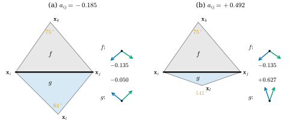
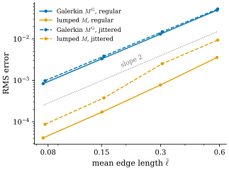

42.3 Discretization via FEM
Goals
- Poisson equation의 weak form을 Green's identity로 유도하고, piecewise linear 함수 공간에서 Galerkin 방정식을 세울 수 있다.
- triangle 하나에서 hat function gradient의 inner product가 \(-\tfrac12\cot\theta\)임을 obtuse한 경우까지 증명하고, stiffness matrix가 모든 triangle mesh에서 \(-L = d_0^{\mathsf T}\star_1d_0\)임을 보일 수 있다.
- \(-u^{\mathsf T}Lu = \int\abs{\grad W_0u}^2\,dA\)에서 \(-L\)이 Delaunay가 아닌 mesh에서도 positive semidefinite이고 kernel이 상수임을 증명할 수 있다.
- Galerkin mass matrix와 lumped mass matrix를 계산하고, linear system \(Lu = Mf\)를 세워 sphere 위의 Poisson 문제를 풀고 수렴을 확인할 수 있다.
Prerequisites
- Proposition 42.1.12: Green's first identity, Proposition 42.2.13: Poisson equation의 variational form
- Definition 36.3.1, Proposition 36.3.2: hat function과 그 gradient, Definition 36.3.8: \(W_0u = \sum_iu_i\varphi_i\)
- Definition 36.6.6, Proposition 36.6.7, Proposition 36.6.9: cotan Laplacian과 Delaunay mesh에서의 positive semidefiniteness
Motivation
Section 42.2는 Poisson equation을 energy \(E_D(u) + \int fu\,dA\)의 최소화로 썼다. 이 형태의 장점은 second derivative가 없다는 것이다. 그렇다면 mesh 위의 piecewise linear 함수, 곧 triangle 안에서 affine이고 edge에서 꺾이는 함수도 이 energy에 넣을 수 있다. 이런 함수의 Laplacian은 점마다 정의되지 않지만 gradient는 triangle마다 상수로 정해지기 때문이다.
이것이 finite element method(유한요소법, FEM)의 생각이다. 무한 차원의 함수 공간 대신, 몇 개의 basis 함수로 펼쳐지는 유한 차원 공간에서 가장 좋은 근사를 찾는다. basis는 Chapter 36의 hat function \(\varphi_i\)를 쓴다. Chapter 36은 같은 \(L\)을 DEC의 합성으로 정의했고, Delaunay mesh에서만 \(-L\)이 positive semidefinite임을 보였으며, 일반 mesh의 증명과 “FEM에서 출발해도 같은 행렬이 나오는 것은 우연인가”라는 질문을 이 장에 남겼다(Chapter 36의 Leads to). 이 절이 그 둘에 답한다.
The Weak Form and the Galerkin Method
이 절에서 \(S\)는 boundary 없는 compact oriented surface다. boundary는 Section 42.5에서 다룬다.
Proposition 42.3.1 (weak form of the Poisson equation). smooth 함수 \(u, f\)에 대하여 \(\Delta u = f\)인 것과, 모든 smooth 함수 \(v\)에 대하여
인 것은 동치다.
Proof. (42.1.7)(boundary 항 없음)에서 \(\int\inner{\grad u}{\grad v} = -\int v\,\Delta u\)이므로 (42.3.1)은 \(\int(\Delta u - f)v\,dA = 0\)과 같다. \(\Delta u = f\)이면 성립하고, 모든 \(v\)에서 성립하면 Theorem 42.2.4의 증명과 같은 논법(Lemma 35.5.7)으로 \(\Delta u - f = 0\)이다.
(42.3.1)을 Poisson equation의 weak form(약형식)이라 하고, \(v\)를 test function(시험함수)이라 부른다. “방정식이 성립한다”를 “모든 test function으로 재어도 양변이 같다”로 바꾼 것이다. 이 형태에는 \(u\)의 first derivative만 나온다. 또 Proposition 42.2.13의 \(J\)의 first variation이 정확히 (42.3.1)이므로, weak form은 “energy의 critical point”의 다른 이름이다.
이제 \(S\)를 triangle mesh \(\abs{\mathcal{K}}\)로 바꾸고, 함수를 piecewise linear 함수 공간 \(V_h := \Span\{\varphi_1, \dots, \varphi_{n_0}\}\)으로 제한한다. 각 triangle 위에서 함수는 affine이므로 gradient는 triangle의 평면 안의 상수 vector이고, edge 위에서는 정의되지 않지만 넓이가 \(0\)이라 적분에 영향이 없다. Galerkin method(갈레르킨 방법)는 해와 test function을 모두 \(V_h\)에서 고른다. \(f\)의 vertex 값을 \(f \in \R^{n_0}\)로 쓰고 \(W_0f\)로 interpolate하면, 미지수 \(u \in \R^{n_0}\)에 대한 방정식은
이다. test function이 \(n_0\)개이고 미지수도 \(n_0\)개다. 양변은 \(u\)와 \(f\)에 대해 linear이므로 이것은 \(n_0\times n_0\) linear system이고, 남은 일은 그 행렬의 성분을 계산하는 것이다 [Cr §6.2].
The Stiffness Matrix Is the Cotan Laplacian
먼저 triangle 하나에서 계산한다. triangle의 평면에 orthonormal frame을 잡고 vertex 순서 \((i, j, k)\)가 반시계 방향이 되게 orient하면 Proposition 36.3.2(d)를 그대로 쓸 수 있다. \(\R^3\) 안의 triangle에서는 그 평면의 \(+90^\circ\) 회전 \(J\)가 \(\mathbf{N}_f\times\)이다(dgdec.barycentric_gradients). Chapter 36의 \(\nabla\varphi_i\)를 이 장에서는 \(\grad\varphi_i\)로 쓴다.
Lemma 42.3.2 (one triangle). 넓이가 \(A_f \gt 0\)인 triangle \(f\)의 vertex를 \(i, j, k\), 내각을 \(\theta_i, \theta_j, \theta_k\)라 하자. \(f\) 위에서
이다. 각이 obtuse여도 그대로 성립한다.
Proof idea: 두 gradient는 맞은편 edge를 \(90^\circ\) 돌린 것이므로, 그 inner product는 \(\theta_k\)를 끼고 있는 두 edge의 inner product다. 넓이로 나누면 cosine과 sine의 비, 곧 cotangent가 남는다.
Proof. (36.3.1)에서 \(\grad\varphi_i = J(\mathbf{x}_k - \mathbf{x}_j)/(2A_f)\), \(\grad\varphi_j = J(\mathbf{x}_i - \mathbf{x}_k)/(2A_f)\)이고 \(J\)는 isometry이므로
\[ \begin{aligned} \inner{\grad\varphi_i}{\grad\varphi_j} &= \frac{\inner{\mathbf{x}_k - \mathbf{x}_j}{\mathbf{x}_i - \mathbf{x}_k}}{4A_f^2} = -\frac{\inner{\mathbf{a}}{\mathbf{b}}}{4A_f^2}, \\ \mathbf{a} &= \mathbf{x}_i - \mathbf{x}_k,\ \ \mathbf{b} = \mathbf{x}_j - \mathbf{x}_k \end{aligned} \]
이다. \(\theta_k\)는 \(\mathbf{a}\)와 \(\mathbf{b}\) 사이의 각이므로 \(\inner{\mathbf{a}}{\mathbf{b}} = \abs{\mathbf{a}}\abs{\mathbf{b}}\cos\theta_k\)이고 \(2A_f = \abs{\mathbf{a}}\abs{\mathbf{b}}\sin\theta_k\)이다(\(\sin\theta_k \gt 0\)). 따라서 \(A_f\inner{\grad\varphi_i}{\grad\varphi_j}\) \(= -\abs{\mathbf{a}}\abs{\mathbf{b}}\cos\theta_k/(4A_f) = -\tfrac12\cot\theta_k\)이다. 이 계산은 \(\cos\theta_k\)의 부호를 가정하지 않으므로 obtuse한 각에도 성립한다. 둘째 식은 \(\grad\varphi_i + \grad\varphi_j + \grad\varphi_k = 0\)((36.3.1))에서 \(\abs{\grad\varphi_i}^2\) \(= -\inner{\grad\varphi_i}{\grad\varphi_j} - \inner{\grad\varphi_i}{\grad\varphi_k}\)이고, 첫 식을 두 번 쓰면 된다(\(\inner{\grad\varphi_i}{\grad\varphi_k}\)의 맞은편 각은 \(\theta_j\)).
Definition 42.3.3 (stiffness matrix). triangle mesh의 hat function \(\varphi_1, \dots, \varphi_{n_0}\)에 대하여
를 성분으로 하는 \(n_0\times n_0\) 행렬 \((a_{ij})\)를 stiffness matrix(강성 행렬)라 한다. 합은 모든 face에 대한 것이고, \(i\)나 \(j\)를 vertex로 갖지 않는 face에서는 항이 \(0\)이다.
예를 들어 triangle 하나 \((0, 0), (1, 0), (0, 1)\)로 된 mesh에서는 각이 \(90^\circ, 45^\circ, 45^\circ\)이므로 \((a_{ij}) = \tfrac12\begin{pmatrix}2&-1&-1\\-1&1&0\\-1&0&1\end{pmatrix}\)이다(Exercise 42.3.1). 이름은 탄성체의 FEM에서 왔다. 그곳에서 이 행렬은 변위와 복원력을 잇는 “강성”이다.
Non-example 42.3.4 (the strong form sees nothing). stiffness matrix 대신 Poisson equation을 그대로, 곧 \(\int(\Delta W_0u)\varphi_i\,dA\)로 discretize하려 하면 실패한다. \(W_0u\)는 각 triangle의 안쪽에서 affine이므로 점마다의 \(\Delta W_0u\)는 face의 안쪽에서 \(0\)이고, 그 적분은 모든 \(u\)에서 \(0\)이다. \(W_0u\)의 “휘어짐”은 모두 edge 위의 꺾임에 몰려 있고, 점마다의 Laplacian은 그것을 보지 못한다. weak form은 Green's identity로 미분 하나를 test function으로 옮겨 이 문제를 피한다. 꺾임의 양을 직접 재는 다른 길이 Section 42.4의 dual cell 위의 flux다.

Figure 42.3.1의 오른쪽 화살표 묶음을 보자. \(\grad\varphi_i\)는 \(\mathbf{x}_i\)의 맞은편 edge에 수직이고 \(\mathbf{x}_i\) 쪽을 향하며, \(\grad\varphi_j\)도 마찬가지다. 그래서 두 화살표 사이의 각은 그 face에서 edge \(ij\)의 맞은편 각 \(\theta\)의 보각이다. (a)의 두 face와 (b)의 \(f\)에서 \(\theta\)가 acute이므로 화살표가 서로 벌어지고(inner product 음수), (b)의 납작한 \(g\)에서는 \(\theta = 141^\circ\)라 화살표가 거의 같은 쪽을 향한다(inner product 양수, 그것도 크다). stiffness 성분은 이 둘을 더한 것이고, (b)에서는 양수 쪽이 이겨 cotan weight가 음수가 된다. 아래 정리가 이 계산을 mesh 전체로 확장한다.
Theorem 42.3.5 (FEM and DEC give the same matrix). 모든 triangle mesh(surface mesh여도, boundary가 있어도, Delaunay가 아니어도 된다)에서
이다. 여기서 \(L\)은 Definition 36.6.6의 cotan Laplacian이다.
Proof. \(i \ne j\)라 하자. \(\varphi_i\varphi_j\)의 gradient 곱이 \(0\)이 아닌 face는 \(i\)와 \(j\)를 모두 vertex로 갖는 face, 곧 edge \(\{i, j\}\)를 포함하는 face뿐이다. \(\{i, j\}\)가 edge가 아니면 그런 face가 없어 \(a_{ij} = 0 = L_{ij}\)이다. edge이면 그것을 포함하는 face는 둘(boundary edge면 하나)이고, Lemma 42.3.2에서 각 face의 기여는 그 face에서 edge의 맞은편 각 \(\alpha_{ij}\) 또는 \(\beta_{ij}\)의 \(-\tfrac12\cot\)이다. 따라서 \(a_{ij} = -\tfrac12(\cot\alpha_{ij} + \cot\beta_{ij}) = -L_{ij}\)이다(Proposition 36.6.7, boundary edge는 한 항). 대각 성분은 \(\sum_j\varphi_j = 1\)에서 \(\sum_j\grad\varphi_j = 0\)이므로 \(a_{ii} = -\sum_{j\ne i}a_{ij} = \sum_{j\sim i}L_{ij} = -L_{ii}\)이다. 마지막 등호 \(-L = d_0^{\mathsf T}\star_1d_0\)는 정의 (36.6.3)이다.
이 정리가 말하는 것: “piecewise linear 함수의 Dirichlet energy를 정확히 계산한다”(FEM)와 “\(d\)와 \(\star\)를 행렬로 바꾸어 합성한다”(DEC)는 전혀 다른 출발점인데 같은 행렬을 준다. 우연이 아닌 이유는 Section 42.4에서 본다. 둘 다 결국 “triangle마다 gradient가 상수인 함수의 flux를 정확히 잰다”는 같은 계산을 하기 때문이다. Delaunay 조건은 어디에도 쓰이지 않았다. 그래서 다음 결과가 Chapter 36의 가정을 없앤다.
Corollary 42.3.6 (\(-L\) is positive semidefinite on every mesh). 모든 triangle mesh와 모든 \(u \in \R^{n_0}\)에 대하여
이다. 따라서 \(-L\)은 symmetric positive semidefinite이고, mesh가 connected이면 \(\ker L = \Span\{\mathbf{1}\}\)이다.
Proof. 각 face에서 \(\grad W_0u = \sum_iu_i\grad\varphi_i\)이므로 \(\int\abs{\grad W_0u}^2 = \sum_{i,j}u_iu_ja_{ij} = u^{\mathsf T}(-L)u\)이다(Theorem 42.3.5). 값이 \(0\)이면 모든 face에서 \(\grad W_0u = 0\)이므로 \(W_0u\)는 각 face 위에서 상수이고, face의 세 vertex 값이 같다. 이웃한 face는 vertex를 공유하므로, mesh의 edge를 따라가면(connected) 모든 vertex 값이 같다. 거꾸로 상수 \(u\)는 \(\grad W_0u = 0\)을 준다. \(-L\)이 symmetric positive semidefinite이므로 \(Lu = 0\)과 \(u^{\mathsf T}Lu = 0\)은 동치이고(eigenvector로 전개하면 된다), 따라서 \(\ker L\)은 상수들이다.
cotan weight가 음수인 edge가 있어도 (42.3.6)의 오른쪽은 적분이므로 음수가 될 수 없다. Chapter 36의 증명(Proposition 36.6.9)은 \(-u^{\mathsf T}Lu = \sum w_{ij}(u_j - u_i)^2\)의 각 항이 \(0\) 이상이라는 것을 썼고, 그래서 Delaunay가 필요했다. 여기서는 edge마다 나누지 않고 face마다 묶어서 본다. 한 face 안에서 세 edge의 항을 더하면 \(A_f\abs{\grad W_0u}^2 \ge 0\)이 되어, 한 항이 음수여도 face 단위로는 언제나 \(0\) 이상이다.
Example 42.3.7 (a mesh with obtuse triangles).
lib/ch42.jittered_sphere(3, s=0.15, seed=42)는 icosphere(3)의 vertex를 평균 edge 길이의 \(0.15\)배 정도 접선 방향으로 흔든 뒤 unit sphere로 되돌린 mesh다(vertex 642개). triangle 1280개 가운데 168개가 obtuse이고, edge 1920개 가운데 31개의 cotan weight가 음수다(가장 작은 값 \(-0.499\)). 그래도 \(-L\)의 eigenvalue는 \(0\)(한 번), \(0.0388, \dots\)로 모두 \(0\) 이상이고, 임의의 \(u\)에서 (42.3.6)의 양변이 반올림 오차 안에서 같다(Implementation 상자). Chapter 36의 non-Delaunay pair(Example 36.6.10)도 같은 이유로 positive semidefinite였다.
Verification: verify/v-42-3-fem.py
Mass Matrices and the Linear System
(42.3.2)의 오른쪽에는 \(\varphi_i\)와 \(\varphi_j\)의 곱의 적분이 나온다.
Definition 42.3.8 (mass matrix). \(M^{\mathrm{G}}_{ij} := \int_{\abs{\mathcal{K}}}\varphi_i\varphi_j\,dA\)를 성분으로 하는 \(n_0\times n_0\) 행렬 \(M^{\mathrm{G}}\)를 (Galerkin, 또는 consistent) mass matrix(질량 행렬)라 한다. 모든 \(u, v \in \R^{n_0}\)에서 \(u^{\mathsf T}M^{\mathrm{G}}v = \int(W_0u)(W_0v)\,dA\)이다.
Proposition 42.3.9 (entries of the mass matrix). face \(f\)의 vertex \(i, j\)(같아도 된다)에 대하여 \(\int_f\varphi_i\varphi_j\,dA = \tfrac{A_f}{12}(1 + \delta_{ij})\)이다. 따라서 \(M^{\mathrm{G}}_{ij}\)는 edge \(\{i, j\}\)를 포함하는 face의 넓이의 합의 \(\tfrac1{12}\), \(M^{\mathrm{G}}_{ii}\)는 \(i\)를 포함하는 face의 넓이의 합의 \(\tfrac16\)이고, 나머지는 \(0\)이다. \(M^{\mathrm{G}}\)는 symmetric positive definite이다.
Proof. face \(f\)의 평면에 좌표를 잡고 reference triangle \(T = \{(s, t) : s, t \ge 0,\ s + t \le 1\}\)에서 \(f\)로 가는 affine map \((s, t) \mapsto \mathbf{x}_i + s(\mathbf{x}_j - \mathbf{x}_i) + t(\mathbf{x}_k - \mathbf{x}_i)\)를 쓰자. 이 map의 Jacobian의 절댓값은 \(2A_f\)이고(넓이 \(\tfrac12\)인 \(T\)를 넓이 \(A_f\)로 보낸다), hat function은 barycentric coordinates \(\varphi_i = 1 - s - t\), \(\varphi_j = s\), \(\varphi_k = t\)가 된다. change of variables formula로 \(\int_f\varphi_j\varphi_k\,dA = 2A_f\int_Tst\,ds\,dt\) \(= 2A_f\cdot\tfrac1{24} = \tfrac{A_f}{12}\), \(\int_f\varphi_j^2\,dA = 2A_f\int_Ts^2\,ds\,dt = 2A_f\cdot\tfrac1{12} = \tfrac{A_f}{6}\)이다(\(\int_0^1\!\int_0^{1-s}st\,dt\,ds = \int_0^1s\tfrac{(1-s)^2}{2}ds = \tfrac1{24}\), \(\int_0^1s^2(1 - s)\,ds = \tfrac1{12}\)). 대칭성으로 다른 쌍도 같다. 합의 규칙은 Theorem 42.3.5의 증명과 같다. 마지막으로 \(v \ne 0\)이면 \(W_0v\)는 어떤 vertex에서 \(0\)이 아닌 continuous 함수이므로 \(v^{\mathsf T}M^{\mathrm{G}}v = \int(W_0v)^2\,dA \gt 0\)이다.
Non-example 42.3.10 (the identity is not a mass matrix). \(\int u^2\,dA\)를 \(u^{\mathsf T}u = \sum_iu_i^2\)로 바꾸면 넓이를 잃는다. 상수 \(u = \mathbf{1}\)에서 \(u^{\mathsf T}u = n_0\)는 mesh를 세분할 때마다 약 4배가 되지만 \(\int1\,dA\)는 넓이로 그대로다. unit sphere의 icosphere(1)–(3)에서 \(\mathbf{1}^{\mathsf T}M^{\mathrm{G}}\mathbf{1}\)은 \(11.67, 12.33, 12.51\)로 \(4\pi = 12.57\)에 가까워지고, \(n_0\)는 \(42, 162, 642\)다. 함수의 값(0-form)과 넓이 위의 적분(2-form)을 잇는 것이 mass matrix, 곧 \(\star_0\)의 역할이다(Non-example 36.5.4).
\(M^{\mathrm{G}}\)는 대각 행렬이 아니다. 실제 계산에서는 흔히 행의 합을 대각에 모은 행렬을 쓴다.
Definition 42.3.11 (lumped mass matrix). \(M_{ii} := \sum_jM^{\mathrm{G}}_{ij}\)를 대각 성분으로 하는 대각 행렬 \(M\)을 lumped mass matrix(집중 질량 행렬)라 한다.
Proposition 42.3.12 (lumping gives the barycentric dual area).
\(M_{ii} = \int\varphi_i\,dA = \tfrac13\sum_{f\ni i}A_f\)이다. 곧 lumped mass matrix는 barycentric dual cell의 넓이로 만든 diagonal Hodge star \(\star_0^{\mathrm{bary}}\)(Remark 36.5.17(a), dgmesh.mass_barycentric)와 같다.
Proof. \(\sum_j\varphi_j = 1\)(Proposition 36.3.2(c))이므로 \(\sum_jM^{\mathrm{G}}_{ij} = \int\varphi_i\sum_j\varphi_j = \int\varphi_i\)이다. face \(f \ni i\)마다 Proposition 42.3.9에서 \(\tfrac{A_f}{12}(2 + 1 + 1) = \tfrac{A_f}{3}\)이다.
lumping은 근사다. face 하나의 local matrix \(\tfrac{A_f}{12}(I_3 + \mathbf{1}\mathbf{1}^{\mathsf T})\)의 eigenvalue는 \(\tfrac{A_f}{3}\)(\(\mathbf{1}\) 방향)과 \(\tfrac{A_f}{12}\)(두 번)이고, lumped matrix \(\tfrac{A_f}{3}I_3\)는 앞의 것만 맞춘다. 그래서 두 행렬은 상수 함수의 적분(\(\mathbf{1}^{\mathsf T}M\mathbf{1} = \mathbf{1}^{\mathsf T}M^{\mathrm{G}}\mathbf{1}\) = 넓이)은 같게 주지만 진동하는 함수에서는 다르다(Exercise 42.3.4). 대신 대각 행렬이라 \(M^{-1}\)이 쉽고, \(M^{-1}L\)을 vertex마다의 Laplacian 근사로 읽을 수 있다. 그 \(M\)을 다른 dual area로 바꾸는 것이 Section 42.4의 DEC 관점이다.
Proposition 42.3.13 (the Galerkin system). (42.3.2)는
와 같다. 오른쪽의 \(M^{\mathrm{G}}\)를 lumped mass matrix로 바꾼 것이 \(Lu = Mf\)이다.
Proof. 왼쪽은 \(\int\inner{\sum_ju_j\grad\varphi_j}{\grad\varphi_i}\) \(= \sum_ja_{ij}u_j = -(Lu)_i\)이고(Theorem 42.3.5), 오른쪽은 \(-\int\sum_jf_j\varphi_j\varphi_i = -(M^{\mathrm{G}}f)_i\)이다. 양변에 \(-1\)을 곱한다.
부호를 보자. \(L \approx M\Delta\)이므로 \(Lu = Mf\)는 \(\Delta u = f\)의 양변을 dual cell에서 적분한 것으로 읽힌다(Section 42.4). 닫힌 mesh에서는 \(L\)의 kernel이 상수이므로 smooth의 경우처럼 \(\mathbf{1}^{\mathsf T}Mf = 0\)일 때만 풀리고 해는 상수 차이로 유일하다. 그 처리는 Section 42.6에서 정리하고, 아래 예는 그 방법을 미리 쓴다.
Example 42.3.14 (recovering \(z\) on the sphere). unit sphere에서 \(\Delta z = -2z\)이므로(Example 42.1.11) Poisson equation \(\Delta u = -2z\)의 해는 \(z\)(+ 상수)다. icosphere(level)에서 \(f_i = -2z_i\)로 \(Lu = M^{\mathrm{G}}f\)와 \(Lu = Mf\)(lumped)를 풀고, 해와 \(z\)를 각각 넓이 가중 평균이 \(0\)이 되게 맞춘 뒤 넓이 가중 RMS 오차를 쟀다. level 1–4(평균 edge 길이 \(0.58\)에서 \(0.075\))에서 Galerkin mass는 \(4.9\times10^{-2}\), \(1.3\times10^{-2}\), \(3.3\times10^{-3}\), \(8.3\times10^{-4}\), lumped mass는 \(3.6\times10^{-3}\), \(7.7\times10^{-4}\), \(1.7\times10^{-4}\), \(4.1\times10^{-5}\)이다. 둘 다 edge 길이가 반이 될 때마다 약 \(\tfrac14\)로 준다. vertex를 흔든 mesh(Example 42.3.7의 방법, level 1–4)에서도 같다(Figure 42.3.2).
Verification: verify/v-42-3-fem.py

ch42.jittered_sphere, \(s = 0.15\), seed 42)에서 Galerkin mass \(Lu = M^{\mathrm{G}}f\)(파랑)와 lumped mass \(Lu = Mf\)(주황)로 푼 것. 읽는 법: 가로축은 평균 edge 길이 \(\bar\ell\), 세로축은 vertex에서의 넓이 가중 RMS 오차(log–log)다. 회색 점선은 기울기 \(2\)다. 볼 것: 네 선 모두 기울기가 약 \(2\)(맞춘 기울기 \(2.00, 2.13, 1.97, 2.44\))다. jittered mesh에는 obtuse triangle과 음수 cotan weight가 있지만 수렴이 깨지지 않는다. 이 예에서는 lumped mass의 오차가 Galerkin보다 5–20배 작다. 이것은 이 두 문제(sphere와 Exercise 42.3.6의 torus)에서 관찰한 것이고, 어느 쪽이 더 정확하다는 일반적인 보장은 아니다. 본문과의 연결: Proposition 42.3.13, Example 42.3.14, Remark 42.3.15.Figure 42.3.2에서 먼저 볼 것은 네 선이 모두 평행하게 내려간다는 것이다. mesh가 불규칙해도, cotan weight가 음수여도, mass matrix를 lumping해도 해는 같은 order로 수렴한다. 다음으로 파란 선과 주황 선의 간격을 보자. 같은 \(L\)을 쓰므로 차이는 오른쪽 \(M\)에서만 온다. 이 오차에는 discretization 오차 말고도 기하 오차가 들어 있다. mesh는 sphere에 내접한 다면체라 넓이가 \(4\pi\)보다 작고(Example 38.6.6(a)), 우리는 다면체 위의 해를 sphere 위의 \(z\)와 비교하고 있다. 두 mass matrix가 이 기하 오차와 어떻게 상호작용하는지는 문제에 따라 다르다.
Remark 42.3.15 (convergence). piecewise linear FEM의 표준 오차 이론은 smooth한 해와 모양이 고른(shape-regular) mesh에서 해의 \(L^2\) 오차가 \(O(\bar\ell^2)\), gradient의 오차가 \(O(\bar\ell)\)임을 보인다. surface에서는 mesh가 surface를 근사하는 기하 오차가 더해지는데, vertex가 surface 위에 있는 triangle mesh에서는 그 오차도 같은 order라서 위의 order가 그대로 성립한다 [Dziuk88](진술만 한다). vertex가 surface 위에 있다는 가정을 빼면 무엇이 필요한지는 [Hildebrandt06]이 답한다. polyhedral surface의 열이 compact smooth surface \(M\) 위의 normal graph이고 \(M\)에 Hausdorff distance로 수렴한다고 하자. 그러면 normal의 (uniform) 수렴, metric의 수렴, 넓이 원소의 수렴, Laplace–Beltrami operator의 수렴(\(H^1_0\)에서 그 dual \(H^{-1}\)로 가는 operator의 norm으로, 곧 weak form (42.3.1)의 수렴)이 서로 동치다. 이 논문은 이것을 totally normal convergence라 부르고, 그러면 Dirichlet 문제의 해와 cotan FEM의 해가 \(H^1_0\)에서 수렴함을 보인다(vertex가 surface 위에 있는 경우의 \(\bar\ell^2\) 추정 [Dziuk88]을 일반화한 것이다). Hausdorff distance만 수렴하고 normal이 수렴하지 않으면 넓이조차 수렴하지 않을 수 있다(Schwarz lantern). 같은 논문의 mean curvature에 대한 결론은 Remark 41.4.6에 있다. 저자가 공개한 판(ZIB-Report 05-24)으로 확인했다. 이 수렴은 해와 energy의 수렴이다. vertex마다의 \(M^{-1}Lu\)가 \(\Delta u\)에 수렴한다는 보장은 아니며, 실제로 그렇지 않은 예가 있다(Example 38.6.6(c), Example 42.4.6). 또 exact solution이 \(V_h\)에 들어 있으면(예: 평면 영역의 affine 함수) Galerkin 해가 그것을 정확히 재현한다. 평면 grid의 경우는 Section 42.5에서 boundary 조건과 함께 본다.
Summary
- weak form \(\int\inner{\grad u}{\grad v} = -\int fv\)(모든 \(v\))는 first derivative만 쓰므로 piecewise linear 함수에 쓸 수 있다. Galerkin method는 해와 test function을 hat function의 span에서 고른다(Proposition 42.3.1).
- triangle 하나에서 \(A_f\inner{\grad\varphi_i}{\grad\varphi_j} = -\tfrac12\cot\theta_k\)이고, 이것을 더한 stiffness matrix는 모든 mesh에서 정확히 \(-L = d_0^{\mathsf T}\star_1d_0\)이다. FEM과 DEC가 같은 행렬을 준다(Lemma 42.3.2, Theorem 42.3.5).
- \(-u^{\mathsf T}Lu = \int\abs{\grad W_0u}^2\)이므로 \(-L\)은 Delaunay가 아닌 mesh에서도 positive semidefinite이고 connected mesh에서 kernel은 상수다(Corollary 42.3.6).
- mass matrix \(M^{\mathrm{G}}_{ij} = \int\varphi_i\varphi_j\)는 face마다 \(\tfrac{A_f}{12}(1 + \delta_{ij})\)이고, lumping하면 barycentric dual area다. Poisson equation은 \(Lu = M^{\mathrm{G}}f\) 또는 \(Lu = Mf\)이며, sphere에서 해가 \(O(\bar\ell^2)\)로 수렴한다(Proposition 42.3.9, Proposition 42.3.12, Example 42.3.14).
다음 절에서는 같은 \(L\)을 DEC의 관점에서, 곧 \(\Delta u\)를 vertex의 dual cell 위에서 적분하고 Stokes's theorem으로 boundary flux로 바꾸어 다시 얻는다. 그 관점에서는 \(L\)이 “적분한 Laplacian”이고 점마다의 값을 얻으려면 dual cell의 넓이로 나누어야 하는데, 그 넓이를 고르는 방법이 여럿이다.
Exercises
Exercise 42.3.1 ★ triangle 하나 \(\mathbf{x}_0 = (0, 0)\), \(\mathbf{x}_1 = (1, 0)\), \(\mathbf{x}_2 = (0, 1)\)로 된 mesh의 stiffness matrix와 mass matrix \(M^{\mathrm{G}}\), lumped mass matrix \(M\)을 구하여라.
Solution
각은 \(\theta_0 = 90^\circ\), \(\theta_1 = \theta_2 = 45^\circ\)이고 \(A = \tfrac12\)이다. (42.3.3)에서 \(a_{01} = -\tfrac12\cot\theta_2 = -\tfrac12\), \(a_{02} = -\tfrac12\cot\theta_1 = -\tfrac12\), \(a_{12} = -\tfrac12\cot\theta_0 = 0\)이고 대각은 행의 합이 \(0\)이 되게 \(a_{00} = 1\), \(a_{11} = a_{22} = \tfrac12\)이다. 곧 \((a_{ij}) = \tfrac12\begin{pmatrix}2&-1&-1\\-1&1&0\\-1&0&1\end{pmatrix}\)이다. 직접 확인하면 \(\grad\varphi_0 = (-1, -1)\), \(\grad\varphi_1 = (1, 0)\), \(\grad\varphi_2 = (0, 1)\)(Example 36.3.3(a))이므로 \(a_{00} = \tfrac12\cdot2 = 1\), \(a_{01} = \tfrac12\cdot(-1)\), \(a_{12} = 0\)으로 같다. \(M^{\mathrm{G}} = \tfrac{1}{24}\begin{pmatrix}2&1&1\\1&2&1\\1&1&2\end{pmatrix}\), \(M = \tfrac16I_3\)이다.
Verification: verify/v-42-3-fem.py
Exercise 42.3.2 ★ stiffness matrix의 행의 합이 \(0\)임을 \(\sum_i\varphi_i = 1\)로 보이고, 이것이 smooth의 어느 사실(Corollary 42.1.13)에 대응하는지 말하여라. 또 \(\mathbf{1}^{\mathsf T}M^{\mathrm{G}}\mathbf{1}\)이 mesh의 넓이임을 보여라.
Solution
\(\sum_ja_{ij} = \int\inner{\grad\varphi_i}{\grad\sum_j\varphi_j}\) \(= \int\inner{\grad\varphi_i}{\grad 1} = 0\)이다. 곧 \(L\mathbf{1} = 0\)이고, smooth에서 상수가 harmonic이라는 것(kernel이 상수, Corollary 42.1.13(d))에 대응한다. symmetric이므로 열의 합도 \(0\)이고, 이것은 \(\int\Delta u = 0\)(Corollary 42.1.13(b))의 discrete 판 \(\mathbf{1}^{\mathsf T}Lu = 0\)이다. \(\mathbf{1}^{\mathsf T}M^{\mathrm{G}}\mathbf{1} = \int(\sum_i\varphi_i)^2 = \int1 = \) 넓이다.
Exercise 42.3.3 ★ 참인지 거짓인지 판별하고 이유를 써라. (a) non-Delaunay edge가 있으면 \(-L\)에 음수 eigenvalue가 생긴다. (b) stiffness matrix의 off-diagonal 성분은 모두 \(0\) 이하다. (c) Galerkin mass matrix의 성분은 모두 \(0\) 이상이다.
Solution
(a) 거짓. Corollary 42.3.6에 의해 \(-L\)은 모든 mesh에서 positive semidefinite다(Example 42.3.7). (b) 거짓. off-diagonal 성분은 \(a_{ij} = -L_{ij} = -\tfrac12(\cot\alpha + \cot\beta)\)이고 non-Delaunay edge에서 양수다(Figure 42.3.1(b)의 \(+0.492\)). (c) 참. Proposition 42.3.9에서 각 성분은 넓이의 합에 양수를 곱한 것이다. hat function이 모두 \(0\) 이상이므로 \(\int\varphi_i\varphi_j \ge 0\)이기도 하다.
Exercise 42.3.4 ★★ 모든 \(v \in \R^{n_0}\)에 대하여 \(\tfrac14v^{\mathsf T}Mv \le v^{\mathsf T}M^{\mathrm{G}}v \le v^{\mathsf T}Mv\)임을 보여라(\(M\)은 lumped). 양쪽 등호는 각각 어떤 \(v\)에서 성립하는가? (힌트: face 하나의 local matrix로 나누어 본다.)
Solution
두 quadratic form은 face마다의 합이다: \(v^{\mathsf T}M^{\mathrm{G}}v = \sum_fv_f^{\mathsf T}\tfrac{A_f}{12}(I_3 + \mathbf{1}\mathbf{1}^{\mathsf T})v_f\), \(v^{\mathsf T}Mv = \sum_fv_f^{\mathsf T}\tfrac{A_f}{3}v_f\)(\(v_f\)는 face의 세 vertex 값). \(I_3 + \mathbf{1}\mathbf{1}^{\mathsf T}\)의 eigenvalue는 \(4\)(\(\mathbf{1}\))와 \(1\)(\(\mathbf{1}^\perp\), 두 번)이므로 \(\tfrac{A_f}{12}\abs{v_f}^2 \le v_f^{\mathsf T}\tfrac{A_f}{12}(I + \mathbf{1}\mathbf{1}^{\mathsf T})v_f \le \tfrac{A_f}{3}\abs{v_f}^2\)이다. face에 대해 더하면 된다. 오른쪽 등호는 모든 face에서 \(v_f \parallel \mathbf{1}\), 곧 connected mesh에서 \(v\)가 상수일 때다. 왼쪽 등호는 모든 face에서 \(v_f \perp \mathbf{1}\)(세 값의 합이 \(0\))일 때인데, 예를 들어 정삼각형 grid를 세 색으로 칠할 수 있으면 색마다 \(1, -1, 0\)을 주어 얻는다. 곧 lumping은 가장 빨리 진동하는 함수의 \(\int v^2\)를 최대 4배 크게 잰다.
Verification: verify/v-42-3-fem.py
Exercise 42.3.5 ★★ Coding. icosphere(2)와 (3)에서 generalized eigenproblem \(-L\varphi = \lambda M^{\mathrm{G}}\varphi\)(Galerkin)와 \(-L\varphi = \lambda M\varphi\)(lumped)의 가장 작은 eigenvalue 16개를 구해 \(\ell = 1, 2, 3\)의 묶음(3, 5, 7개)의 평균을 \(\ell(\ell + 1) = 2, 6, 12\)와 비교하여라. Galerkin eigenvalue가 polyhedral surface 자신의 Laplacian eigenvalue의 upper bound라는 것을 min-max principle로 설명하여라.
Solution
import numpy as np
import dgmesh as dm
import ch42
for level in (2, 3):
V, F = dm.icosphere(level)
L = dm.cotan_laplacian(V, F)
C = np.linalg.cholesky(ch42.galerkin_mass(V, F)) # M^G = C C^T
Ci = np.linalg.inv(C)
lam_G = np.linalg.eigvalsh(Ci @ (-L) @ Ci.T)[:16] # -L phi = lambda M^G phi
s = 1 / np.sqrt(dm.mass_barycentric(V, F))
lam_M = np.linalg.eigvalsh(-(s[:, None] * L * s[None, :]))[:16] # lumped (barycentric) mass
for name, lam in (("galerkin", lam_G), ("lumped", lam_M)):
print(level, name, [round(float(lam[a:b].mean()), 3) for a, b in ((1, 4), (4, 9), (9, 16))])2 galerkin [2.046, 6.282, 13.002]
2 lumped [2.0, 5.864, 11.332]
3 galerkin [2.012, 6.07, 12.246]
3 lumped [2.0, 5.966, 11.83]\(M^{\mathrm{G}} = CC^{\mathsf T}\)(Proposition 42.3.9에서 positive definite)이면 \(\psi = C^{\mathsf T}\varphi\)로 바꾸어 symmetric matrix \(C^{-1}(-L)C^{-\mathsf T}\)의 보통 eigenproblem이 된다. Galerkin eigenvalue는 \(2.046, 6.282, 13.002\)(level 2)로 정확한 값보다 크고, level 3에서 \(2.012, 6.070, 12.246\)으로 위에서 다가온다. lumped는 \(5.864, 11.332\)처럼 아래에서 다가온다(\(\ell = 1\)은 거의 정확하다). 설명: polyhedral surface \(\abs{\mathcal{K}}\)의 \(k\)번째 eigenvalue는 min-max principle에 의해 \(k\)차원 subspace 위에서 Rayleigh quotient \(\int\abs{\grad v}^2/\int v^2\)의 최댓값을 최소화한 값이다. \(V_h\) 안의 함수에서는 이 quotient가 정확히 \(v^{\mathsf T}(-L)v/v^{\mathsf T}M^{\mathrm{G}}v\)이므로((42.3.6), Definition 42.3.8), subspace를 \(V_h\) 안에서만 고르는 Galerkin eigenvalue는 그 최소화의 범위가 좁아 더 크다. lumped mass는 분모를 \(v^{\mathsf T}Mv \ge v^{\mathsf T}M^{\mathrm{G}}v\)(Exercise 42.3.4)로 바꾸어 quotient를 줄이므로 이 보장이 없다. 두 값 모두 sphere의 \(\ell(\ell + 1)\)과 비교할 때는 기하 오차가 섞인다.
Verification: verify/v-42-3-fem.py가 이 코드를 그대로 실행하고 출력을 비교한다.
Exercise 42.3.6 ★★
torus of revolution \(T_{2,0.8}\)에서 Poisson equation \(\Delta u = f\), \(f = -\dfrac{\sin u\,(R + 2r\cos u)}{r(R + r\cos u)}\)(해는 높이 \(z\), Exercise 42.1.6)를 torus_mesh(2, 0.8, n_u, n_v)에서 Galerkin mass와 lumped mass로 풀고, \((n_u, n_v) = (12, 24), (16, 32), (24, 48)\)에서 넓이 가중 RMS 오차를 비교하여라.
Solution
Example 42.3.14와 같은 방법(평균 제거, 넓이 가중 평균이 \(0\)이 되게 맞추기)으로 풀면 오차는 Galerkin \(3.2\times10^{-2}, 1.8\times10^{-2}, 8.1\times10^{-3}\), lumped(barycentric) \(7.1\times10^{-3}, 4.1\times10^{-3}, 1.8\times10^{-3}\)이다. 평균 edge 길이는 \(0.536, 0.403, 0.269\)이므로 둘 다 \(\bar\ell^2\)에 비례해 준다(\(0.536/0.269 \approx 2\)일 때 약 \(\tfrac14\)). sphere와 마찬가지로 lumped 쪽의 오차가 약 4배 작다. torus_mesh(\(24\times48\))는 triangle 2304개 가운데 1152개가 obtuse이고 대각선 1152개의 cotan weight가 정확히 \(0\)인 mesh인데도(Exercise 42.1.6) 수렴은 깨지지 않는다.
Verification: verify/v-42-3-fem.py